볕 진행 보고
한눈에
- 끝 걸음 c19b3233넷째 묶음 전체(+ plan 대사 한 줄)를 Day 0 부터 다시 걸었다. 처음부터 끝까지 초록이다(node 23 · 하네스 판 5 · 긴 걸음 5 · 손가락 판 · 브라우저 묶음 전부 · 옛 세이브 · 사진 · 남은 파일 0). core 회귀 74줄도 초록이었다. 사진을 직접 봤다.
- 다섯째 묶음일곱째 판 가름대로 core 가 고치고 있다. 큰 문제 다섯 가운데 값이 안 걸린 셋을 다 고쳤다. 주문 창 [전부] 덫은 «모자란 만큼»으로(⑮ · 27a1811e), 원룸 «밝은 칸» 고리는 비운 칸으로 몬스테라를 이끌게(⑰ · 0164173d), 이사 직후 빈 바닥을 짚던 손가락은 [가방]으로(⑱ · 25fc8019) 고쳤다. 씨앗이 모자란 날 손가락도 주문 단추를 짚는다(⑯ · 638164fe). 고치다 나온 둘(알림 상자가 숨는 칩을 비켜 좁아짐 · [식물] 손가락이 [상점]을 덮음)도 같이 잡았다(cbd0c7c3). 묶음마다 손가락 · 첫 판 검사를 다시 돌려 다 통과했다. 다음은 다시 심기가 아껴 둔 물 줄 체력까지 쓰는 것(7C4)이다.
- 큰 줄기 계획박사님 말씀대로 앞으로의 다섯 단계와 정하실 갈림목 넷을 한 장으로 따로 만들었다: master-roadmap-20261102.html
- 비판 일곱째 판끝났다(6c516eae · 13:3x~15:5x). 막힘 0 · 큰 문제 5 · 작은 문제 11 · 물음 2. 처음 30일은 손가락만 따라도 막히지 않고, 큰 그루를 판 뒤 이사 → 원룸 할 일이 «내 집 자금»까지 끊기지 않는다. 여섯째 판 큰 문제 일곱 가운데 둘(판 뒤 이사 길 · 무늬 0 원룸 말)은 사라졌고, 자르기 말은 대체로 맞춰졌다. 남은 큰 것은 지난 판과 같은 둘(안 팔고 기다리면 Day 100 에 이사비 663,324원 모자람 · 할 일 규모가 하루 체력을 넘음)과 새 셋이다: 주문 창 [전부]가 소지금 전부를 거는 덫 · 원룸 «밝은 칸 비우기» 고리 · 이사 직후 빈 바닥을 짚는 손가락(아래 ⑫~⑭). 총괄이 큰 문제 사진을 직접 보고 갈랐다.
- 새 물음 넷14 큰 그루 내놓기가 열린 날 조용함 · 15 Day 31~90 같은 하루 반복 · 16 할 일 규모와 체력 · 17 원룸 월세가 반지하와 같음. 2번 · 9번에 근거를 더했다(맨 아래).
- 셋째 · 넷째 묶음여섯째 판 고칠 것(core C1~C12 · plan 글 P1~P10)이 셋째 묶음(f373262a · 6c516eae)으로 다 들어갔다. 작은 것 여덟 · 남는 채소 «다음부터 묻지 않고 바로 팔기»(기본 꺼짐) · 이사 창 «가져가는 것 · 두고 가는 것» · 시루 줄 «하루 n개씩 한 바퀴» · 빛 범례 «어둠 0.3까지 · 밝음 2.7부터»다. 넷째 묶음(2dd28956 · 8ed1e2d6)은 plan 대조 · 총괄 사진에서 나온 것이다: 반찬가게 알림 한 글 · 알림 상자를 넓혀 제목 꺾임을 줄임 · 이사 창 시루 개수 · [다음 날] 손가락 자리. 넷째 묶음은 회귀 전체를 비판 판 뒤에 돌린다.
- 끝 걸음158a35a4 · 6c516eae 를 Day 0 부터 다시 걸었다. 둘 다 처음부터 끝까지 초록이다(node 23 · 하네스 판 5 · 긴 걸음 5 · 손가락 판 · 브라우저 묶음 전부 · 옛 세이브 · 사진 · 남은 파일 0). 사진은 총괄이 직접 봤다(아래 ⑧~⑪).
- 둘째 묶음core 둘째 묶음(158a35a4)이 09시 전에 들어갔다. 자르기 문턱을 어디서나 «다 자란 무늬 잎 2장 · 지금 n/2» 한 말로 맞췄고, «다음 기회 약 4일 뒤 · 한 번에 10%»처럼 언제쯤인지 보이게 했다(core 가 그대로 날을 넘겨 넷째 날 실제로 기회가 오는 것을 봤다). 새 시루 첫 심기 단추 · «거둔 횟수 n/3» · 가계부 «그루 판 돈을 빼면» · 칩이 안 돌아오던 병도 들어갔다. 고치기 전 판 빨강 12 → 0 · 회귀 70줄이다. plan 대조에서 나온 거짓 머리 한 줄은 셋째 묶음에서 고쳤다.
- 비판 여섯째 판처음 하는 사람처럼 두 판을 했다. 안 팔고 Day 0 → 100 한 판, Day 80 에 몬스테라를 팔고 원룸 Day 97 까지 간 판이다. 막힘 0 · 큰 문제 7 · 작은 문제 14 가 나왔다. 다섯째 판의 막힘(팔면 원룸 할 일이 멈춤)과 큰 문제 다섯은 사라졌다.
- 고침core 첫 묶음(0400a798)이 들어갔다. 고치기 전 판에서 빨강 28 → 고친 판 0, 회귀 69줄 exit=0 이다. 총괄이 사진 11장을 직접 봤고, 손가락 자리 넷을 더 고치게 넘겼다. 둘째 · 셋째 묶음이 이어서 들어간다.
- 알아낸 것반지하가 느린 뿌리를 찾았다. 무늬 잎이 «다 자라는» 것은 날마다 굴리는 확률인데, 반지하 빛에서는 10% 다. 그래서 무늬 잎 한 장에 43~100일이 걸리고, 자르기가 Day 136 무렵에 열린다. 안 팔고 기다린 판은 Day 100 에도 이사비가 598,334원 모자랐다.
- 여쭐 것새로 셋(11 · 12 · 13)을 더했다. 급한 것은 2번(반지하 속도)과 1번(통째 팔기)이다(맨 아래).
고친 것 — 사진으로
왼쪽은 비판 여섯째 판 사진(8d443621), 오른쪽은 core 첫 묶음(0400a798)을 같은 세이브로 띄운 사진이다. 누르면 크게 보인다.
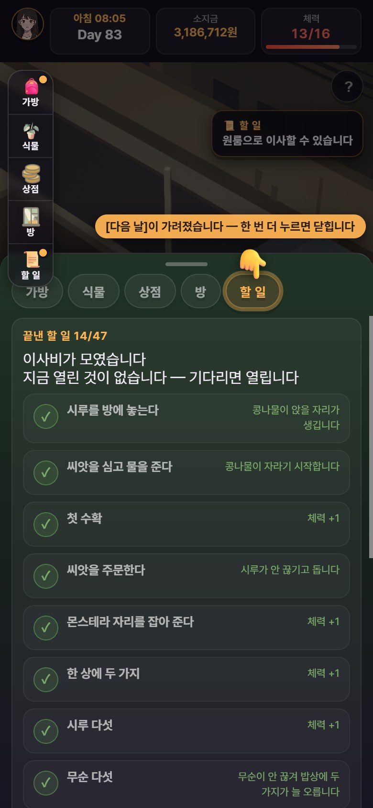
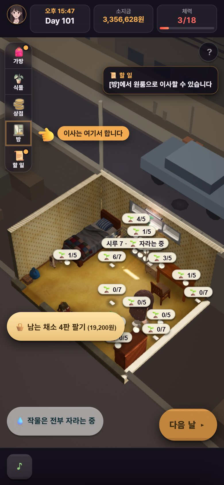
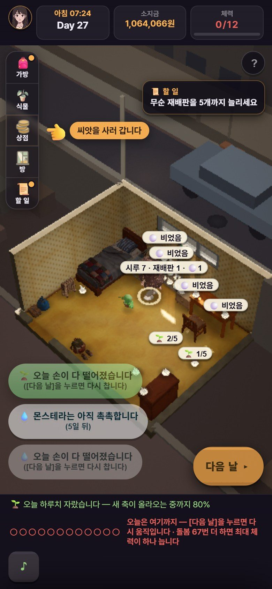
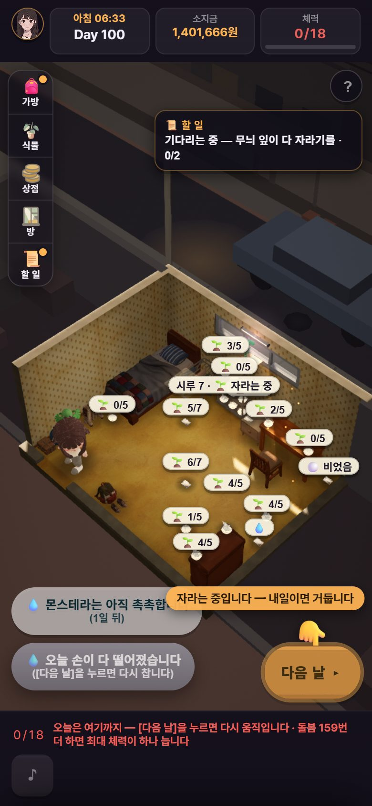
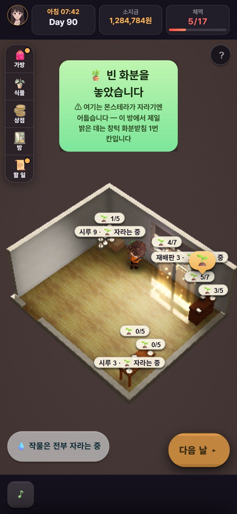
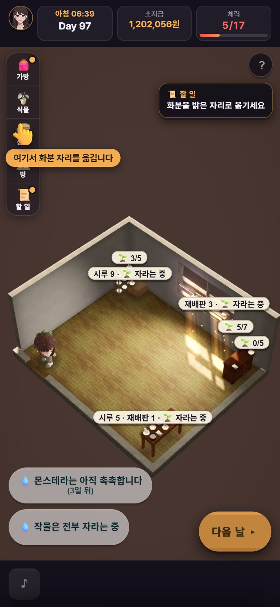
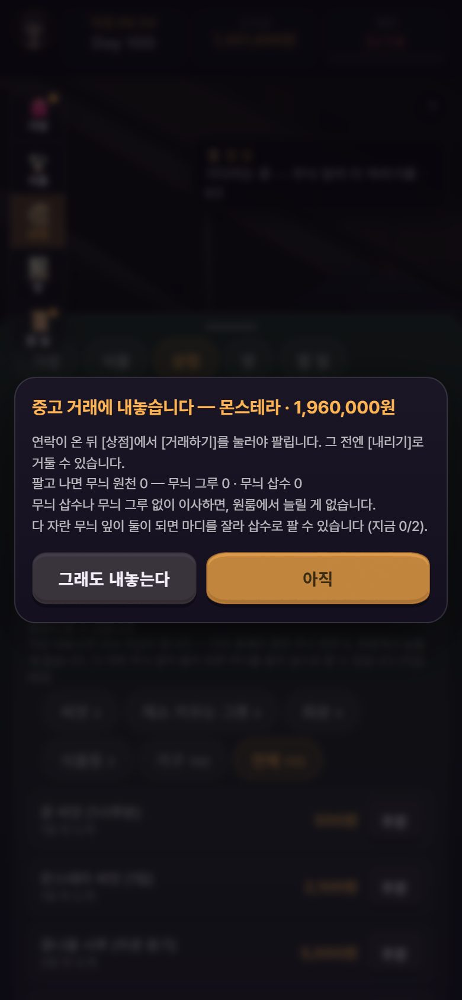
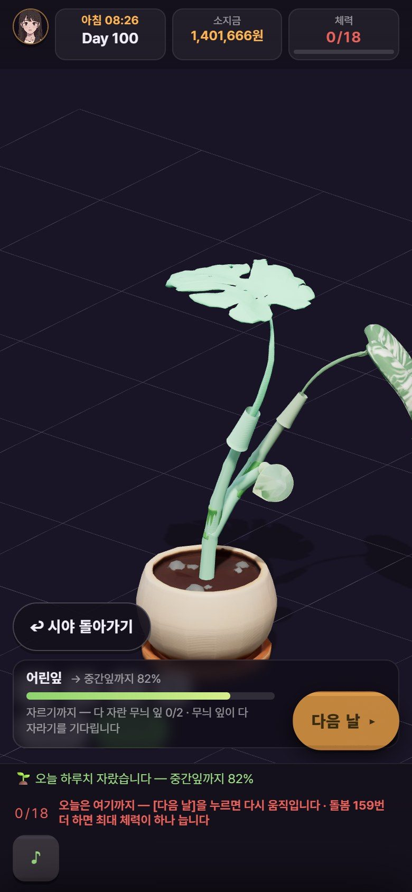
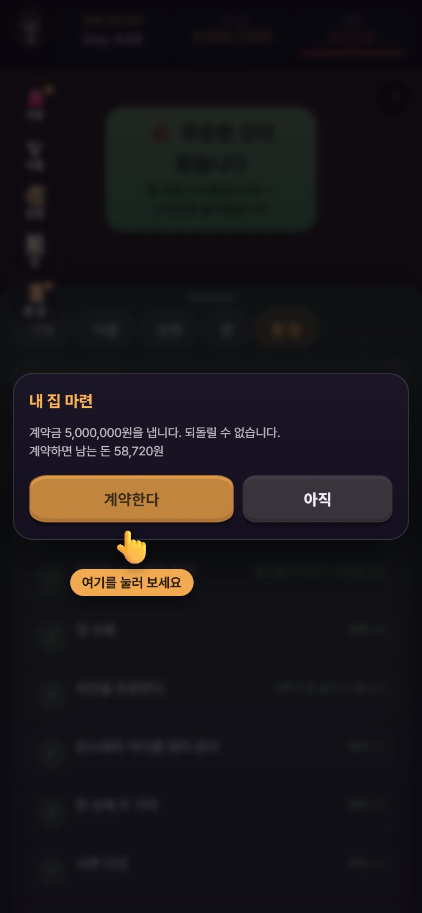
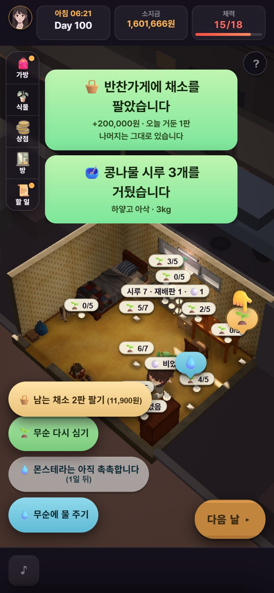
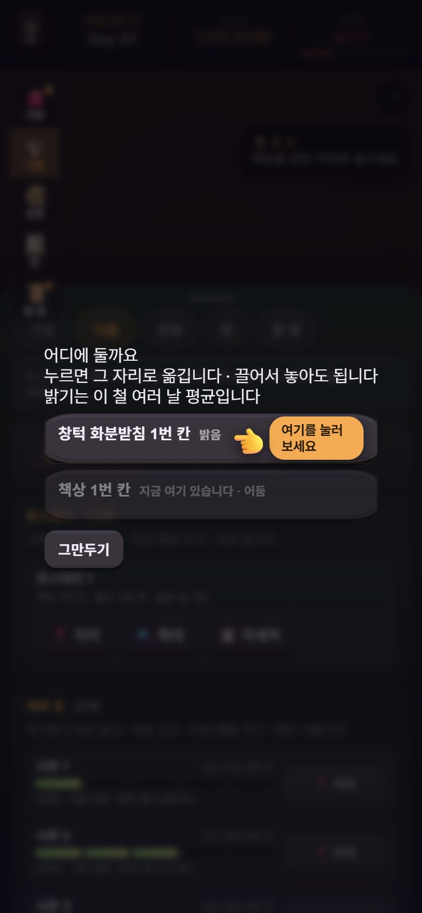
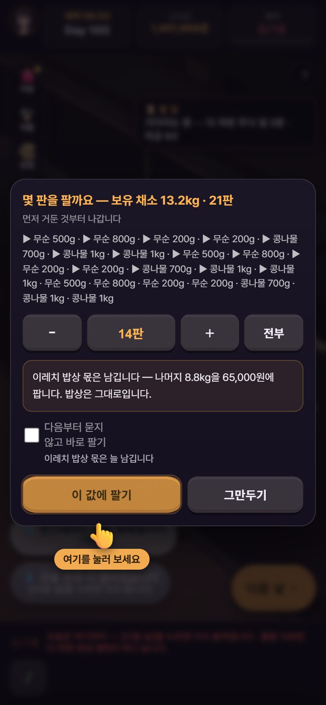
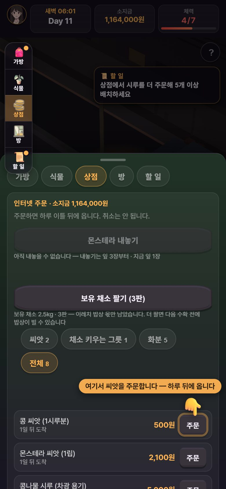
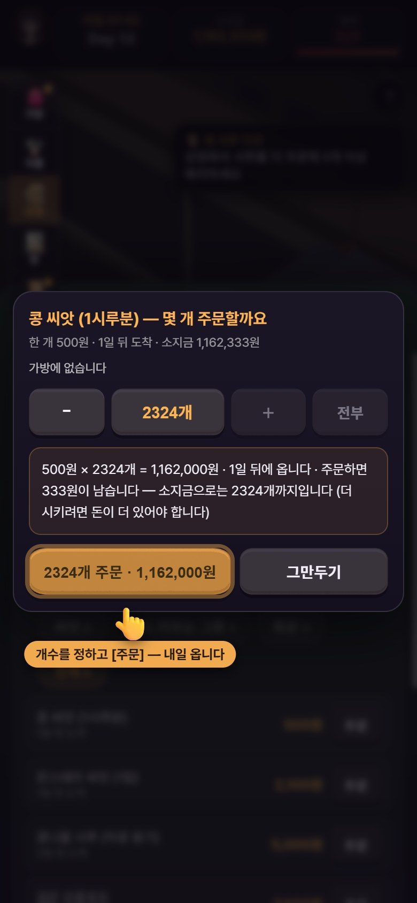
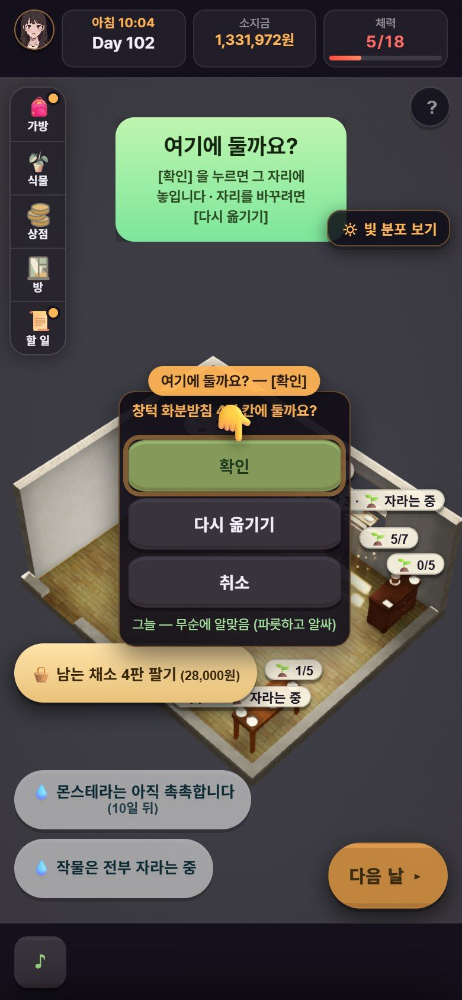
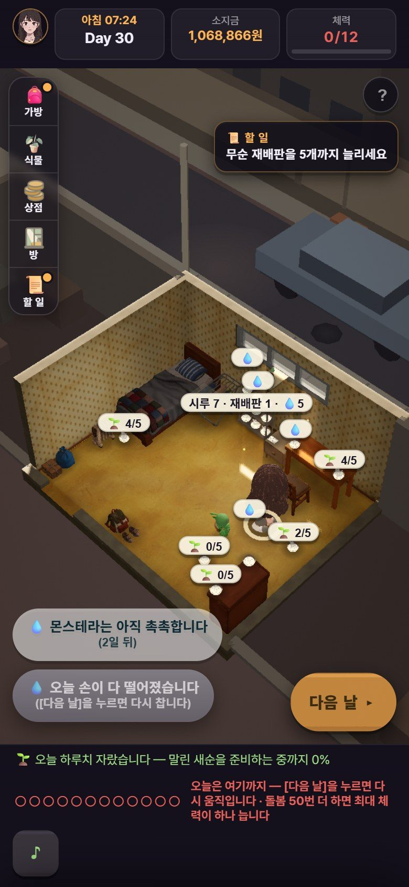
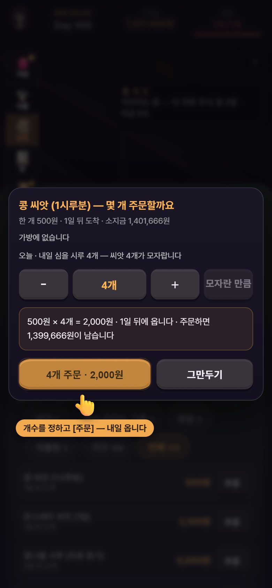
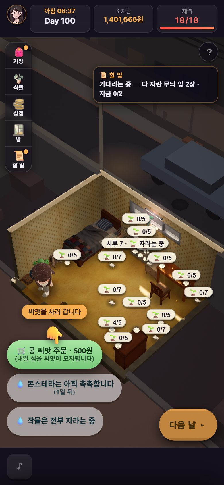
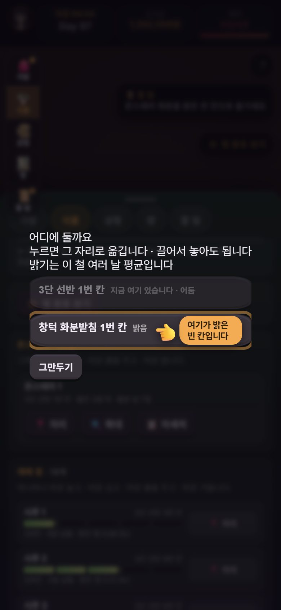
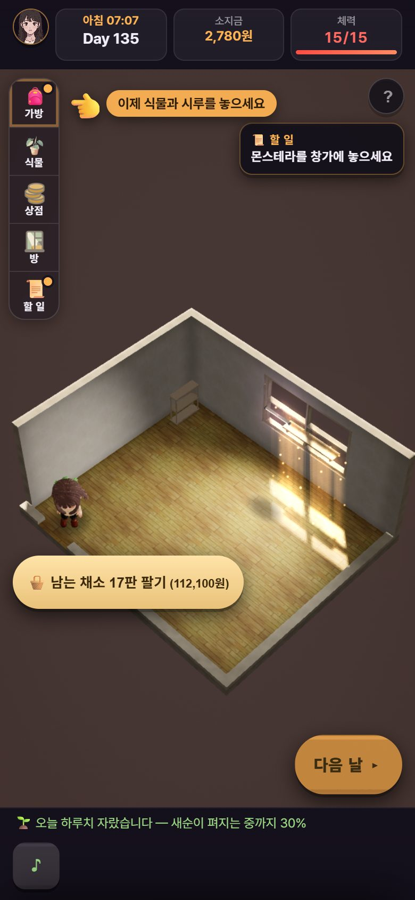
고친 것 — 목록
| 무엇 | 어떻게(값 안 바꿈) | 판 |
|---|---|---|
| 원룸 빈 화분 배너 · 손가락 | 짐이 남은 날 «짐을 푼 뒤, 상점에서 몬스테라 씨앗을 사세요» + 손가락 [가방] · 짐 풀기가 넘어간 날 «상점에서 …» + 손가락 [거두기] | 8d443621 · 5f3fbe01 |
| 집 계약 창 «계약하면 남는 돈» | 한 줄을 넣음(⑦ 사진) | 8d443621 |
| MAJOR#1 울타리가 바닥 단추를 먹음 | 손가락이 다른 데를 짚어도 씨앗 미리 주문 · 거두기 · 다시 심기 단추가 한 번에 눌린다 | 0400a798 |
| MAJOR#5 판 뒤 이사 길 | 칩 · 할 일 판 머리 · 손가락 · 몬이 한 줄(① 사진) | 0400a798 · plan 507ba40d |
| MAJOR#7 원룸 화분 자리 | 자리 목록에 밝기 낱말 · 작물이 앉은 칸은 목록에서 뺌(몬스테라와 무순 판이 겹쳐 서던 것) · 옮기라는 할 일과 손가락(③ 사진) | 0400a798 |
| #8 등을 달아도 반응 없음 | 단 그 자리에서 범례 «등 1개» · 할 일 «식물등을 달아…» 끝남 | 0400a798 |
| #9 빛 분포 끄면 단추가 사라짐 | 같은 자리에 [🔆 빛 분포 보기]가 남음 | 0400a798 |
| #10 체력 0 단추 둘 | 회색 하나 · 씨앗 손가락은 모자랄 때만(② 사진) | 0400a798 |
| #24 경고 창 주 단추 | «아직»이 주 단추(④ 사진) | 0400a798 |
| MAJOR#2 자르기 문턱이 다섯 곳에서 다른 말 | 글 다 씀 — 어디서나 «다 자란 무늬 잎 2장 — 지금 n/2». 남은 양은 «다음 기회 약 n일 뒤 · 한 번에 n%»(약속할 수 없는 «며칠 남음» 대신 늘 참인 두 수). 할 일 «잎 두 장 → 자를 수 있게 됩니다» 거짓 줄 고침 | plan 507ba40d · 158a35a4 |
| MAJOR#6 무늬 0 으로 간 원룸 말이 엇갈림 | 무늬가 있는 판과 없는 판의 대사 · 할 일 글을 가름 | plan 507ba40d · 158a35a4(무늬 원천 0 판 글) |
| #11 새 시루 첫 심기 16번 누름 | 바닥 단추 «🌱 콩 씨앗 심기» 하나로(체력 값 그대로) | plan e28ad6e1 · 158a35a4 |
| #12 «씨앗을 주문한다»가 했는데 «기다리는 중» | 끝 규칙(세 번 거둠)은 그대로 · 글만 «거둔 횟수 n/3 — 시루가 익는 중» | plan 171798ae · 158a35a4 · 할 일 창 머리 «지금 할 것 — 씨앗을 주문한다»가 기다리는 판에도 서던 것(plan 18405b99 대조)은 f373262a 에서 «기다림» 글로 |
| 가계부 견줌에 그루 판 돈이 섞임 | «이사비 · 그루 판 돈을 빼면 지난달보다 …» | plan 507ba40d · 158a35a4 |
| 할 일 판을 연 채 닫으면 칩이 안 돌아옴 | 총괄이 사진에서 찾음 · 묶음 전부터 있던 병 | 158a35a4 |
| 작은 것 묶음(#8 · #13~#18 · #20) | 손가락 말풍선 자리 넷(⑨) · 같은 순간 알림 둘은 합침 · «몬스테라 내놓기» 설명을 그 단추 밑으로 · 가방 안내 글을 칸마다 · 놓인 등 메뉴가 탭 기둥에 잘리지 않음 · [방] «밥으로 아낀 식비 +n원»(가계부와 같은 낱말) | f373262a |
| 남는 채소 날마다 묻는 창 | «다음부터 묻지 않고 바로 팔기»(기본 꺼짐 · 이레치 밥상 몫은 늘 남김 · [방]에서 [다시 묻기])(⑩) | f373262a |
| 이사 창이 무엇을 가져가는지 모름 | «가져가는 것 — 가구 · 시루 · 재배판 · 몬스테라 · 삽수» · «두고 가는 것 — 벽 · 창 · 천장에 붙은 가구 n개» · 시루 개수를 두 번 세던 것(17 → 16) 고침 | f373262a · 2dd28956 |
| 시루를 늘리라는데 체력으로 돌릴 수 있나 | 시루 · 재배판 줄에 «체력 n 이면 하루 n개씩 한 바퀴 돌립니다» | f373262a |
| 빛 범례 숫자가 무슨 뜻인지 | «어둠 0.3까지 · 밝음 2.7부터 · 아주 밝음 6부터» / «칸의 수는 하루 빛 양(DLI)» 두 줄 · 낱말 안에서 안 꺾임 | f373262a · 2dd28956 |
| 반찬가게 알림이 묶음으로 거두면 거짓 | 하나씩 거두든 묶음으로 거두든 같은 결과 · 같은 글(⑧) · 대사 «… 우리 채소를 사 가셨다.» | plan 6efb5c8f · 8ed1e2d6 |
| 알림 상자가 좁아 제목이 두세 줄 | 상자를 글 폭만큼 넓히되 왼쪽 단추 기둥 · [?] · 할 일 칩 · 손가락 말풍선을 비킴(390 화면 제목 2·2·3줄 → 2·1·2줄) · 바닥 체력 줄 «최 / 대» 꺾임 고침 | 8ed1e2d6 |
| [다음 날] 손가락이 빨간 체력 줄을 덮음 | 말을 두 줄로 접어 [다음 날] 위에 세움 | 2dd28956 |
| 상점 줄 말풍선이 줄 글을 덮음(셋째 묶음이 되돌린 것) | 그 줄 위에 틈을 두고 섬(⑪) | 6c516eae |
총괄이 정한 것(D95 안 · 값 아님)
- 비판 여섯째 판 나눔: 고칠 것은 core C1~C12 · plan 글 P1~P10 으로 넘겼다. 재미 · 방향 · 값이 걸린 것은 박사님 물음으로 올렸다.
- «씨앗을 주문한다» 끝: 끝 규칙을 바꾸면 하네스 숫자와 끝 대사가 같이 흔들린다. 그래서 규칙은 두고 보이는 글만 바꿨다(core 추천과 같음).
- 남는 채소 팔기 «다음부터 묻지 않기»: 날마다 같은 확인 창을 누르는 것을 덜기 위해 넣었다(f373262a · 기본 꺼짐). 손으로 파는 맛을 남기시려면 말씀 주십시오(12번).
- 반찬가게 잣대: «묶음 단추로 한 것 = 손으로 하나씩 한 것과 같은 결과». 규칙 · 값은 그대로 두고 글만 세 길(하나씩 · 묶음 · Day 110 결산)에 다 맞는 한 글로 바꿨다.
- 비판 일곱째 판은 6c516eae 로: 끝 걸음이 초록인 가장 새 판이다. 넷째 묶음까지 기다리면 끝 걸음을 한 번 더(1시간 반) 돌려야 한다. 비판이 넷째 묶음에서 이미 고친 것(알림 꺾임 · 반찬가게 글 · [다음 날] 손가락)을 다시 적으면 «넷째 묶음에서 고침 · 회귀 뒤 확인»으로 묶는다.
- 빈 화분 «둘까요?» 창은 일곱째 판 뒤로: 새 창이라 비판 눈으로 한 번 더 본 뒤 넣는다.
- [식물] 창이 열려 있으면 창 안 [거두기]를 짚기(5776a9cc): 손가락이 열린 창의 탭을 짚어 «닫으라»고 하던 것을, 창 안 같은 단추가 보이면 그것을 짚게 했다. 손가락 갈래라 따로 올리고 첫 판 손가락 검사까지 돌렸다.
- 넷째 묶음 회귀를 비판 판 끝까지 안 기다림: 회귀도 크롬 하나로 차례로 돌아 부담이 같아서, core 창에서 바로 돌리게 했다(몇 시간 아낌).
- 일곱째 판 가름: 덫 · 고리 · 손가락 · 단추 회색은 고친다(값 아님). 첫 상점의 회색 «몬스테라 내놓기»는 그대로 둔다(앞으로 열릴 목표를 미리 보이고, 밑줄이 무엇이 모자란지 말함). 도구가 사람과 다르게 누른 넷은 버렸다.
- 박사님 PDF 반영: 새 창이 제일 먼저 읽는 한 장 GUIDE.md를 세웠다. 일 절차는 스킬 여섯(총괄 넷 · plan 둘)으로 만들었다. 스킬마다 «고친 기록»을 두고, 다음 판에서 통과를 본 뒤에야 ✓ 를 붙인다(오늘 ✓ 일곱). 아침 · 저녁 정기 점검으로 이 보고를 고쳐 올린다.
⚠ 총괄 잘못 하나: plan 에 «원룸 첫 철은 겨울»이라고 알렸다. 하네스의 이사 날(Day 135)을 실제 판에 옮긴 탓이다. 실제로는 이사 날의 철이고, 이번 판처럼 Day 83 에 가면 가을이다. plan 이 정본을 읽고 바로잡았다.
다음
- 다섯째 묶음: core 7C1 · 7C7 · 7C2 · 7C3(고침) → 7C4(다시 심기 물 몫 · 하는 중) → 7C5(바닥 단추 첫 누름 — 재현부터) → 나머지 · plan 은 core 가 쓸 글 먼저, 그다음 «다음 기회 약 N일 뒤»를 참인 글로(7P1). 가름 전체: master-critic7-triage-20261102.md
- 다섯째 묶음 → plan 대조 → 끝 걸음 → 비판 여덟째 판.
박사님이 정하실 것
전체는 master-to-doctor-20261101.md (맨 아래 «11-02 보탬»). 말씀이 없으면 지금 상태(값 그대로)로 기다린다.
- 급함반지하가 느리다 — 안 팔고 기다리면 Day 100 에도 이사비 598,334원(여섯째 판) · 663,324원(일곱째 판)이 모자라고 자르기가 안 열린다. 일곱째 판 비판은 «팔면 바로 · 안 팔면 끝이 안 보임으로 갈림이 한쪽으로 기운다»고 적었다.
- 뿌리: 무늬 잎 «다 자람»의 날마다 확률이 반지하 빛에서 10% 이고, 실패하면 게이지가 절반으로 돌아간다. 무늬 잎 한 장에 43일(등)~100일(등 없음)이 걸린다.
- growth 가 손잡이를 판에서만 끼워 쟀다(값 안 바꿈): 등 단 판 자르기 중앙값 Day 136 → 확률 바닥 0.1 → 0.3 이어도 118.
- (가) 그대로 (나) 무늬 잎을 앞당김 — Day 60~80 에 닿으려면 확률만이 아니라 무늬 잎이 나는 때도 앞당겨야 한다 (다) 반지하 월세 · 채소 값.
- 총괄 추천: 박사님이 폰으로 처음부터 해 보신 느낌을 먼저 듣고 정한다. 바꾼다면 (나)가 게임 목표(무늬)와 맞는다.
- 급함몬스테라를 통째로 팔면 무늬 길이 닫힌다 — 경고는 이제 세 창에 다 보이고 원룸 할 일도 이어진다. 남은 물음은 무늬 0 으로 간 원룸에서 내 집(500만)까지 무엇으로 가느냐다(원룸 첫 이레로 어림하면 열두 달 남짓). 총괄 추천: 막지 않고 미리 알림(지금).
- Temp 시험 찌꺼기를 지워도 되는가 — 답 전에는 아무것도 안 지운다(비판 도구가 작업 트리에 남긴 파일 셋도 지우지 않고 보관 폴더로 옮겼다).
- 내 집을 산 뒤 남는 돈 경고 기준(⑦ 사진) — (가) 밥값 30일치 아래면 경고(총괄 추천) (나) 7일치 (다) 경고 없음. 막지는 않는다.
- 남는 채소 팔기 «다음부터 묻지 않기»를 넣어도 되는가 — 넣었다(f373262a · 기본 꺼짐 · ⑩ 사진). 싫으시면 말씀 주십시오. 걷어 내는 것은 쉽다.
- AGENTS.md 의 localhost 한 줄 — 시험 서버는 127.0.0.1 이어야 한다. 고칠까(총괄 추천) · 둘까. 다른 창 파일이라 말씀 전에는 안 건드린다.
- 큰 그루 «내놓기 1,960,000원»이 열린 날 게임이 조용하다 — Day 79 에 열렸는데 비판은 Day 91 상점을 열고서야 알았다. (가) 열린 날 몬이 한 줄(«팔 수도 있어. 다만 무늬 길은 닫혀.» 꼴) — 총괄 추천(고를 수 있다는 것을 알아야 고른다) (나) 지금처럼 조용히. 팔기 쪽으로 기울게 할 수 있어 여쭌다.
- Day 31~90 이 같은 하루의 반복 — 고를 것이 없고, 밥상 창이 100일에 20번 뜨고, 🧺 팔기는 날마다 한 번 누른다. (가) 작은 고름을 더함(4번 사건 카드 둘째 묶음과 같이 · 총괄 추천) (나) 날 넘김을 짧게 (다) 그대로.
- 할 일 규모(시루 16 · 재배판 5)가 하루 체력을 넘는다 — 안 판 판에서 체력 0 으로 끝난 날이 22번이다. 8번과 같은 뿌리다. 일부러 주는 압박인가, 할 일 숫자를 체력에 맞출까(값). 총괄 추천: 폰으로 해 보신 느낌을 먼저 듣는다.
- 원룸 월세가 반지하와 같다(200,000원) — 원룸이 «나아진 방»으로 느껴지게 월세 · 관리비 차이를 둘까, 그대로 둘까(나아진 것은 빛 · 넓이). 값이라 박사님 몫이다.
그 밖에 아침 물음 4~10번(사건 카드 둘째 묶음 · 추석 카드 · 축복받은 삽수 이름 · 핑크프린세스 맞바꿈 · 시루 16 목표 · 반찬가게 20만 · 내놓기 값)도 답을 기다린다. 비판 여섯째 판은 첫 사건 카드가 Day 26 이라 첫 25일에 한 장을 더 두자는 뜻을 냈다(4번에 붙임).
자세한 기록: master-campaign-20261007.md · 비판 여섯째 판 playtest-critic6-20261102.md · 비판 일곱째 판 playtest-critic7-20261102.md · 가름 master-critic7-triage-20261102.md · plan 글 plan-to-core-critic6-20261102.md · 길잡이 GUIDE.md